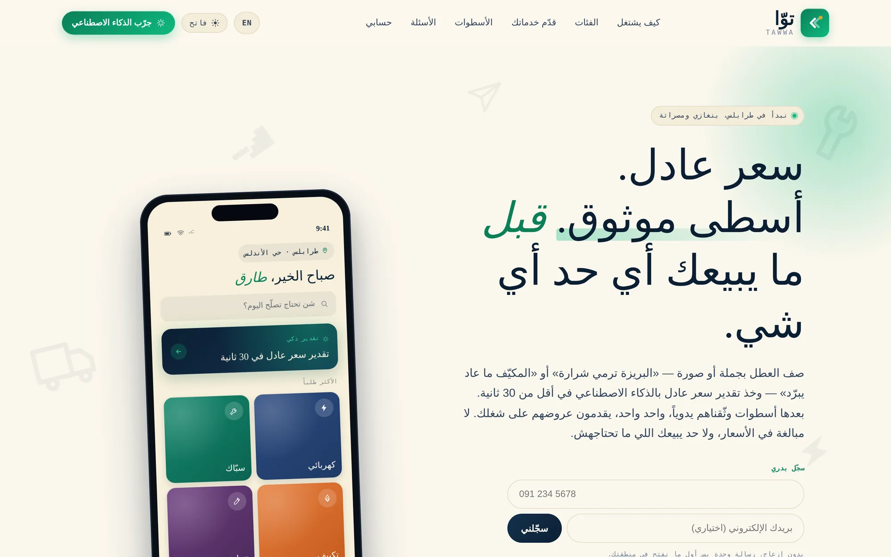

المصارف والمؤسسات المالية
- منظومات محاسبية وتسويات مالية
- بوابات دفع ومزادات بضمانات
- سجل تدقيق كامل وفصل مهام
- تقارير رقابية قابلة للتصدير
منظومات مصرفية ولوجستية وحكومية وتجارية، مبنية ومُشغَّلة في ليبيا. كل نظام في هذه الصفحة حقيقي، ويمكنك فتحه وتصفّحه الآن.

لا نعرض صوراً تخيلية ولا رسوماً توضيحية. كل ما تراه هنا لقطة مُلتقَطة من نظام يعمل فعلاً، ومعظمه قابل للفتح والتجربة مباشرة. إن لم يستطع مورّدك أن يُريك نظامه يعمل خلال دقيقة، فهو يبيعك وعداً.
كل مشروع يُسلَّم بمستودعه ووثائقه وقواعد بياناته. لا ارتهان لمورّد، ولا صندوق أسود.
سجل تدقيق، صلاحيات دقيقة، نسخ احتياطي، واستعادة بعد الأعطال — لا كإضافات لاحقة بل كأساس.
ربط وسائل الدفع المحلية، واجهات عربية أصيلة لا مترجمة، ودعم بالتوقيت المحلي.
اللقطات أدناه مُلتقَطة آلياً من الأنظمة نفسها أثناء تشغيلها، بدقة مضاعفة. البطاقات التي لم تُلتقط لقطتها بعد معروضة بصدق دون صورة بديلة.
تعمل داخل بيئات عملائها أو على بنية تحتية خاصة، ولم تُلتقط لقطاتها بعد. نعرضها في جلسة مشاركة شاشة ببيانات تجريبية.
تخطيط موارد، إدارة علاقات عملاء، محاسبة، مخزون، وأتمتة عمليات بأدوار وصلاحيات متعددة.
منصات تجارية ومزادات وأسواق إلكترونية بلوحات إدارة وتقارير لحظية.
أندرويد وiOS وتطبيقات ويب تقدمية بتجربة عربية كاملة.
ربط بوابات الدفع الليبية والبطاقات المصرفية وروابط التحصيل ومتاجر ووكومرس.
وكلاء يخدمون العملاء، استخراج البيانات من المستندات، وتقدير وتسعير آلي داخل المنظومة.
أنظمة تصميم عربية كاملة: طباعة، ألوان، مكوّنات، ودليل استخدام يسلَّم مع المشروع.
استضافة، حاويات، نسخ احتياطي، مراقبة، ومهام مجدولة مع تنبيهات أعطال.
ترحيل البيانات من أنظمة قائمة أو ملفات إكسل إلى منظومة حديثة دون توقف العمل.
في القطاعات المنظّمة، غياب إجابة واضحة عن الأمان سبب استبعاد مباشر. هذه إجاباتنا الجاهزة قبل أن تُسأل.
صلاحيات على مستوى الدور والحقل، جلسات محدودة المدة، وسجل تدقيق غير قابل للتعديل لكل عملية حساسة.
تشفير أثناء النقل والتخزين، فصل بيانات الإنتاج عن الاختبار، وإخفاء هوية البيانات في البيئات التجريبية.
خيار الاستضافة داخل مقر الجهة أو على سحابة مخصصة، مع تحديد صريح لمكان تخزين البيانات في العقد.
نسخ احتياطي مجدول وتجربة استعادة دورية موثّقة، لا مجرد وجود نسخة.
الكود والوثائق ومخططات قاعدة البيانات ملك للجهة، مع إمكانية مراجعتها من طرف ثالث.
قناة تصعيد معرّفة، زمن استجابة متعاقد عليه، وتقرير سبب جذري بعد كل حادث.
اجتماع واحد نخرج منه بوثيقة نطاق مكتوبة: ما سيُبنى، وما لن يُبنى، ومقياس النجاح.
شاشات قابلة للنقر تعتمدها قبل كتابة سطر برمجي واحد.
إصدار كل أسبوعين على رابط تجريبي خاص بك، تفتحه وتعلّق عليه بنفسك.
فريقك يشغّل سيناريوهات حقيقية على بيانات حقيقية قبل الإطلاق، ونصحّح قبل التسليم.
تدريب موثّق، ثم ضمان إصلاح الأعطال، ثم عقد دعم بزمن استجابة محدد.
نرد خلال 24 ساعة بتقدير مبدئي للنطاق والمدة، أو نقول لك صراحة إن مشروعك لا يناسبنا.
النسخة الحية من هذه المنظومة تعمل داخل بيئة العميل، ولا تُفتح للعامة. نعرضها في جلسة مشاركة شاشة مع بيانات تجريبية.
اطلب عرضاً حياً